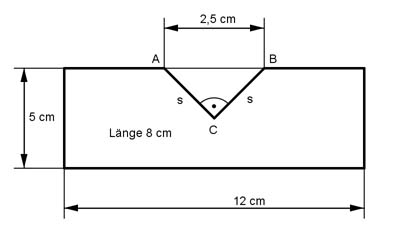

Aufgabe 155 Eine Stahlplatte (Dichte 7,85 g/cm³) ist 12 cm breit, 8 cm lang und 5 cm hoch. In sie wird der Länge nach eine gleichschenklig rechtwinklige Nut mit einer Hypotenuse von 2,5 cm eingefräst. Wie schwer ist die fertige Platte?  Satz von Pythagoras im Dreieck ABC: 2,5² cm² = s² + s² = 2s² | :2 s² = 3,125 cm² |√ s = 1,77 cm VPlatte ohne Nut: VPlatte = 12 cm * 5 cm * 8 cm = 480 cm³ 1,77 cm * 1,77 cm VNut = ------------------- * 8 cm = 12,5 cm³ 2 mPlatte = (VPlatte - VNut) * 7,85 g/cm³ = (480 cm³ - 12,5 cm³) * 7,85 g/cm³ mPlatte = 3 669 g = 3,67 kg